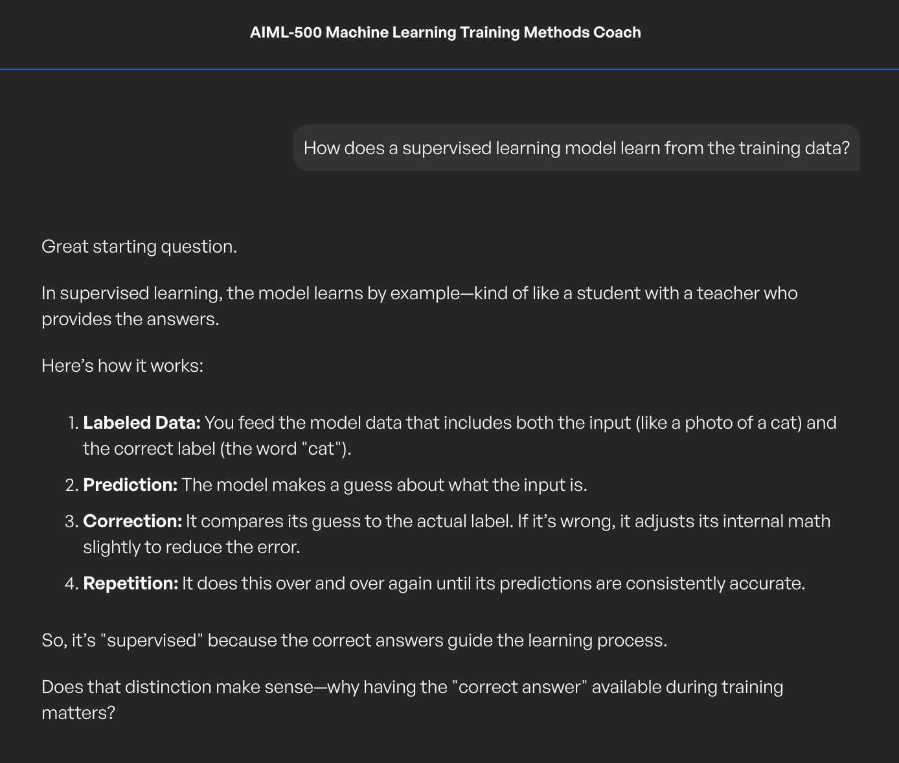
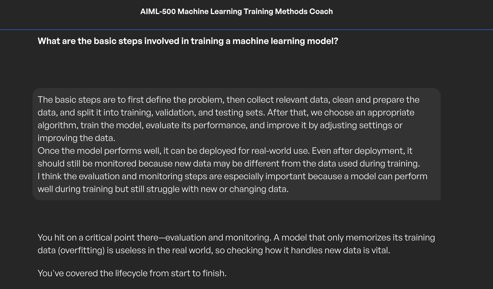
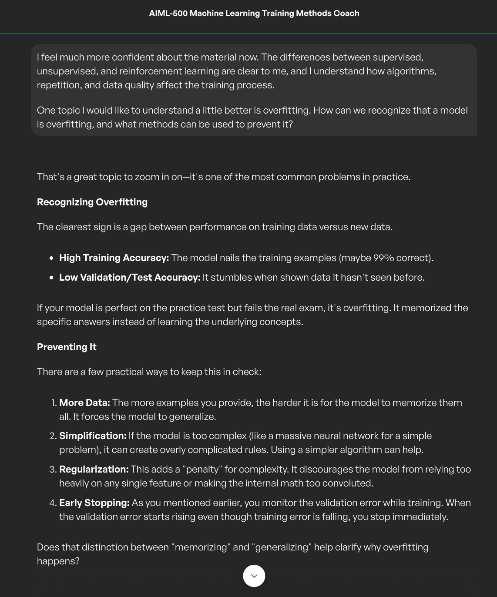

Introduction
Building a foundation in model training
This artifact documents an inquiry-based learning activity about how machine learning models are trained. The activity explored how models learn from examples, how algorithms guide learning, and why evaluation and data quality are important.
The discussion also examined overfitting and the difference between memorizing training examples and generalizing successfully to new data.
Description
Project overview
The learning activity followed a guided question-and-answer format. I asked and answered questions about supervised, unsupervised, and reinforcement learning. The conversation then moved into algorithms, loss functions, gradients, learning rates, epochs, data quality, evaluation, and overfitting.
Each concept was connected to a practical example, including house-price prediction, customer segmentation, warehouse robotics, spam detection, and facial recognition.
Objective
Project goal
The objective was to develop a clear understanding of how machine learning models learn, how different learning methods operate, and how data quality, repetition, and evaluation affect performance.
- Explain supervised, unsupervised, and reinforcement learning.
- Understand loss functions, gradients, and learning rates.
- Describe the model-training lifecycle.
- Explain the role of algorithms and data.
- Recognize and prevent overfitting.
Key Concepts
How machine learning models learn
Supervised Learning
The model learns from labeled examples. It makes predictions, compares them with correct answers, measures error, and adjusts its parameters.
Unsupervised Learning
The model receives unlabeled data and identifies patterns, similarities, or groups without predefined answers.
Reinforcement Learning
An agent learns through interaction, rewards, and penalties while balancing exploration and exploitation.
Parameter Adjustment
The loss function measures error, the gradient gives the direction of change, and the learning rate controls the size of the adjustment.
Epochs and Repetition
Each full pass through the training data is an epoch. Repeated passes allow gradual improvement, but excessive repetition can cause overfitting.
Data Quality
Accurate, relevant, diverse, and representative examples help a model learn patterns that generalize to real-world situations.
Basic model-training process
Define the problem
Identify the prediction, decision, or pattern the model must learn.
Collect and prepare data
Gather relevant information, clean it, and organize it for training.
Split the data
Create training, validation, and testing datasets.
Select and train the model
Choose an appropriate algorithm and train it using the prepared data.
Evaluate and improve
Measure performance and adjust the model, settings, or data.
Deploy and monitor
Use the model in a real environment and monitor performance as data changes.
Understanding overfitting
Overfitting happens when a model memorizes the training data, including noise, instead of learning broader patterns. A common warning sign is very strong training performance but weaker validation or testing performance.
- Use more representative training data.
- Choose a simpler model.
- Apply regularization.
- Use early stopping.
- Monitor validation performance.
Process
How the artifact was developed
Prepared guiding questions
I used the required questions to organize the inquiry activity.
Explored each learning method
I compared supervised, unsupervised, and reinforcement learning using practical examples.
Summarized my understanding
I restated key ideas in my own words to confirm understanding.
Extended the inquiry
I asked an additional question about recognizing and preventing overfitting.
Revised for the portfolio
I transformed the conversation into a professional case study with structured explanations and evidence.
Tools and Technologies
Tools used
Lessons Learned
What I learned
The activity helped me understand that model training is a gradual process rather than a single calculation. Models improve by measuring errors and repeatedly adjusting their internal parameters.
I also learned that high training accuracy does not guarantee that a model will perform well in the real world. Validation, testing, and monitoring are necessary to confirm that the model generalizes to new data.
Artifact-Specific Value Proposition
Unique value and relevance
Unique Value
This artifact demonstrates my ability to learn technical machine-learning concepts through structured inquiry, explain those concepts in practical language, and connect theory to real-world examples.
Professional Relevance
This work is relevant to employers and technical teams because successful AI projects require professionals who understand how models learn, how data affects performance, and why evaluation and generalization are essential.
Evidence
Conversation evidence and report



Complete Report
Machine Learning Training Methods
Review the complete inquiry-based learning report and key conclusions.
View Complete Report